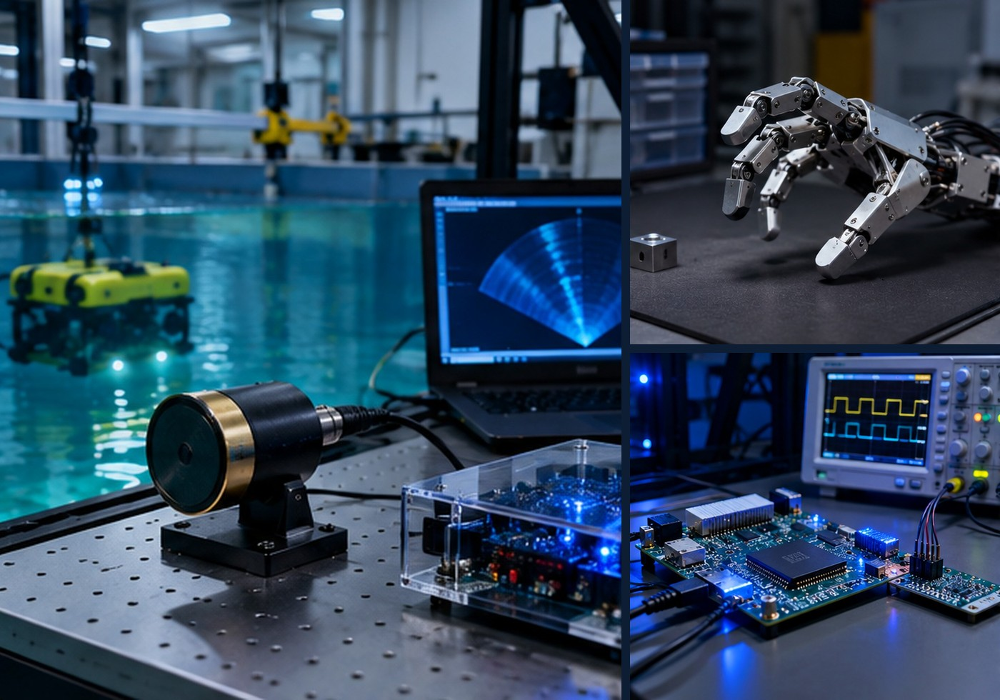
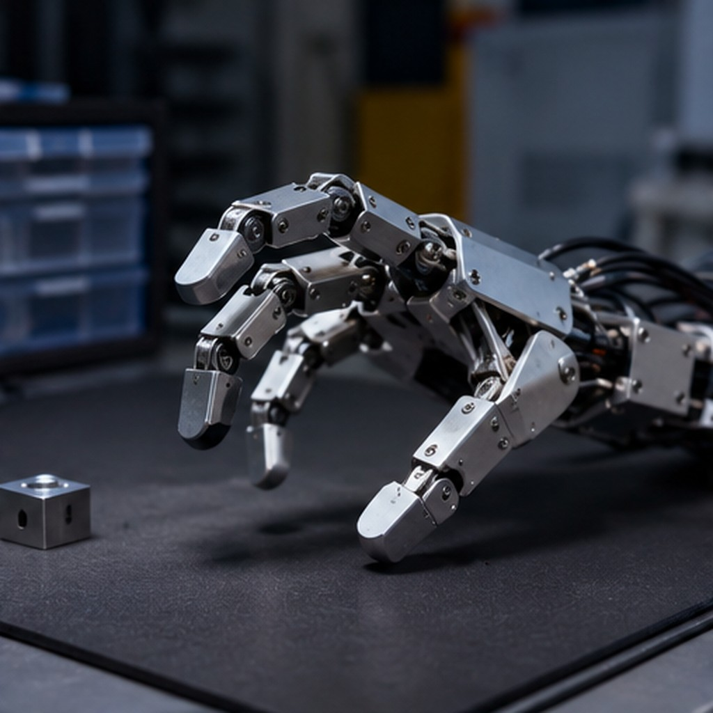
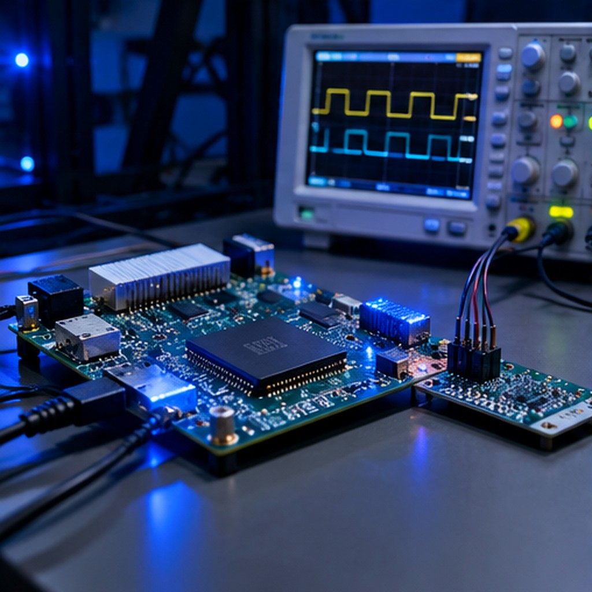
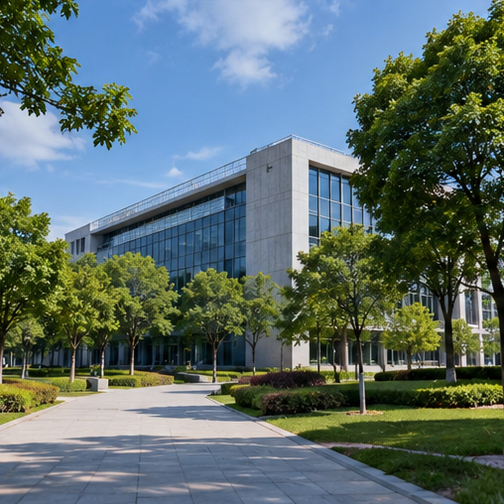
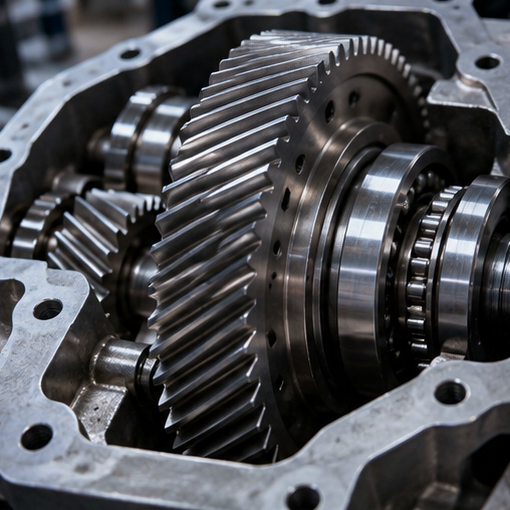

Concept illustration
Forward-looking imaging sonar
Developing a compact multi-channel acoustic imaging system for underwater perception, spanning PZT arrays, analog front ends, FPGA capture and beamforming.
Mechanical engineering PhD researcher & hands-on designer
I build the connection between mechanics, electronics, and intelligent perception — from underwater imaging sonar and FPGA systems to dexterous robotic hands.

A selection of ongoing hardware research and mechanical engineering work.
Developing a compact multi-channel acoustic imaging system for underwater perception, spanning PZT arrays, analog front ends, FPGA capture and beamforming.

Concept illustrationCompact finger joints and a linear-actuator-driven pivoting thumb, designed around constrained stroke, packaging and mechanical transmission.

Concept illustrationA custom 32-channel receive platform integrating analog acquisition, pulser control and gigabit Ethernet data transfer.
Mechanical design, signal processing, research and system development.

University image · illustrativePhD studies · Mechanical Engineering

Research image · illustrativeMaster's studies · Mechanical Engineering
Bachelor's · Mechanical Design, Manufacturing & Automation
Research topics and academic work, distinguished from formally published papers.
Signal analysis and machine-learning methods applied to vibration-based machinery fault diagnosis.
Transducer array design, acquisition hardware, FPGA beamforming and acoustic target perception.
Mechanical architecture and linkage geometry for large-angle articulated motion.
Peer-reviewed publications will be added when bibliographic details are available. No unpublished work is presented as an accepted paper.
A closer look at physical prototypes, electronics and engineering exploration.
Time–frequency feature extraction, fault classification and machinery condition monitoring.
FPGA, PCB, power distribution and high-speed digital interfaces.
Actuator packaging, pivots, four-bar linkages and manufacturable CAD parts.
Space for my photography, travels, workbench moments and everyday experiences.
SolidWorks · CNC design · 3D mechanisms · Tolerance analysis
PCB design · Verilog · Vivado · Artix-7 · STM32
MATLAB · Python · STFT · CWT · Beamforming
Robot mechanisms · Kinematics · MuJoCo · Isaac Sim (learning)
Interested in hardware design, underwater robotics, or research collaboration? My projects and source code are on GitHub.
Visit my GitHub